Canada
Space
Agency
Website Revamp
Role
UX/UI Designer
Date
June 2023
Scroll Down

OVERVIEW
This project involved a team-driven redesign of the Canadian Space Agency's website, with an emphasis on enhancing user experience and accessibility. The team effectively simplified the previously complex layout, creating an intuitive and user-friendly interface. Tailored for a diverse audience, from space enthusiasts to industry professionals, the project demonstrates a keen understanding of user-centric design principles and a commitment to making complex information accessible and engaging.
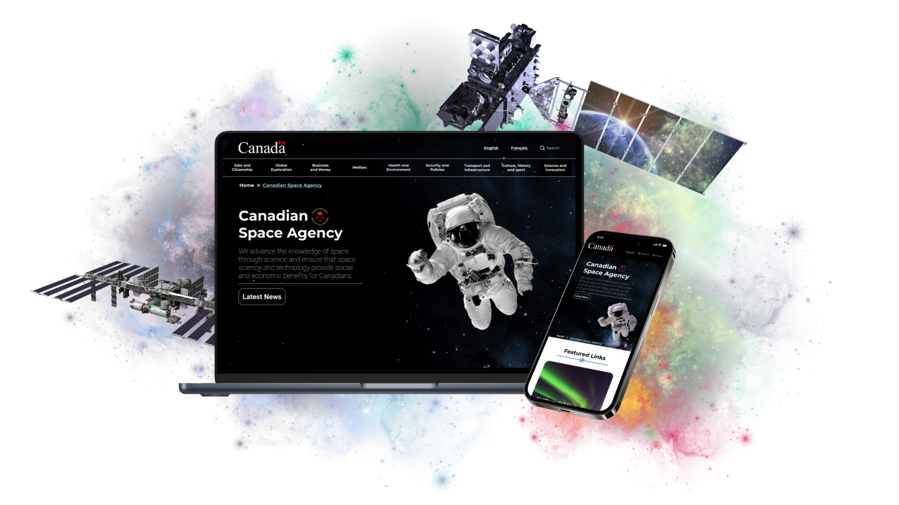
ANALYZING
CURRENT
WEBSITE
The first step in the CSA website redesign was a thorough analysis, essential for understanding the current site and user needs, setting the foundation for a design centered around the user.
This process included usability testing, heuristic evaluation, website annotations, and website annotations to comprehend user information grouping preferences. These combined efforts streamlined the website's complexities, steering its transformation into an intuitive, easily navigable interface.
01. Usability Testing On Current Website
By watching users perform three tasks on the existing site, we gained direct insights into their difficulties and preferences. These valuable insights helped shape the direction for a more easily navigable interface.
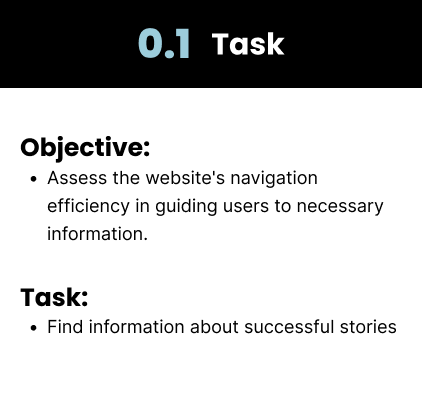
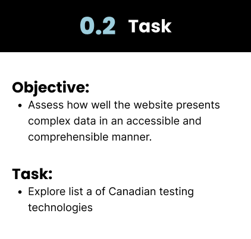
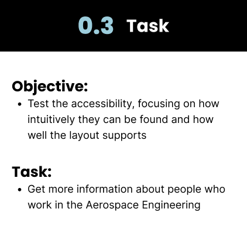
02. Usability Testing On Current Website Results
Overall, these results highlight the need for a more intuitive navigation system, easier access to information, improvement on user interface and enhanced user experience.
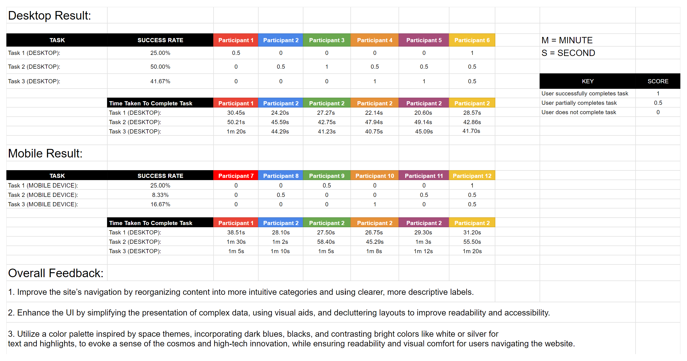
03. Heuristic Evaluation
This method, utilizing Norman’s usability principles, helped us spot and categorize usability issues not directly identified by users, providing additional insights for the redesign towards a intuitive website.
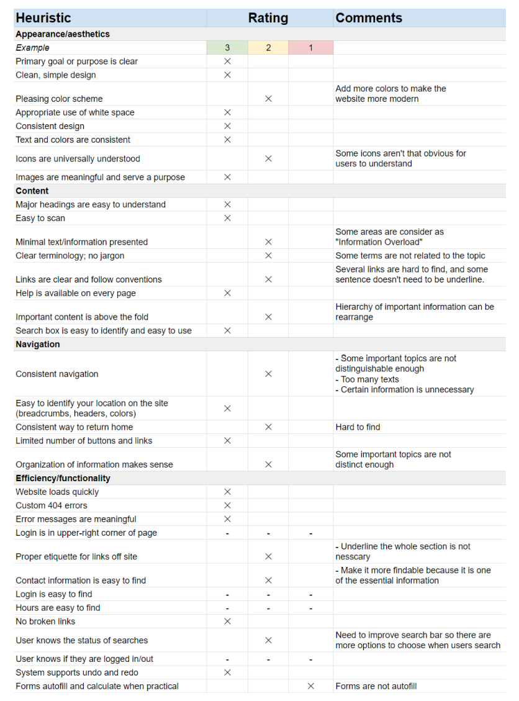
04. Website/Navigation Annotations
This method involves reviewing each webpage in detail to highlight specific issues and opportunities that arose from user testing and heuristic evaluation, ensuring nothing is missed in the redesign.
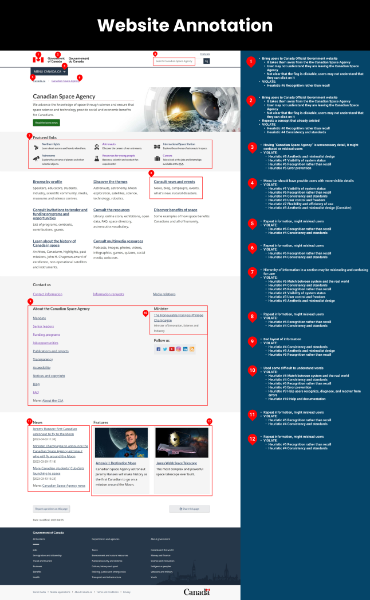
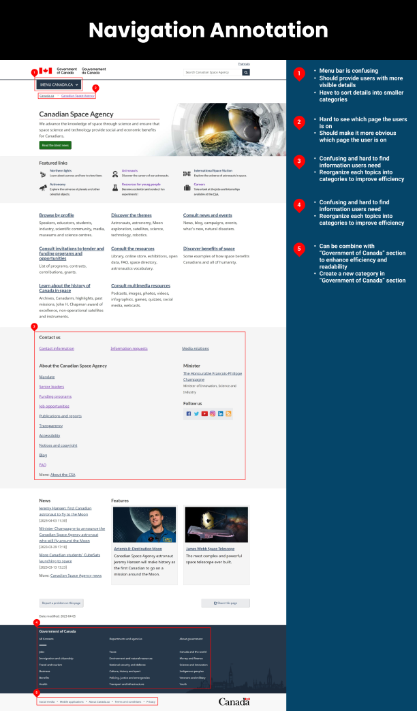
STRUCTURING
AND
DEFINITION
After analyzing the CSA website, we moved to the structure and definition phase. This stage solidified how the site's content would be organized and presented, aligning with users' expectations during card sorting. Furthermore, we created a site map to outline the site's new information architecture. The UI Style Guide was then developed, setting the visual tone for a consistent, and intuitive interface. This phase ensured the website redesign was built on a solid, user-focused framework.
01. Card Sorting
Card sorting helped us understand how users categorize and understand the website's information. These insights then informed us of a clearer, critical to making the website more intuitive.
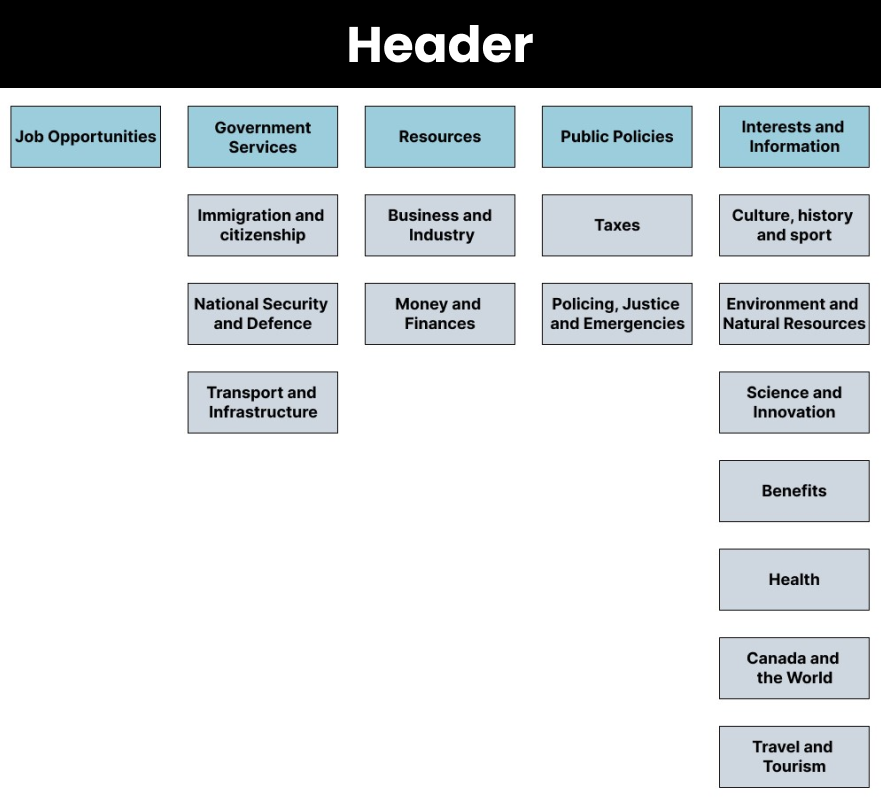
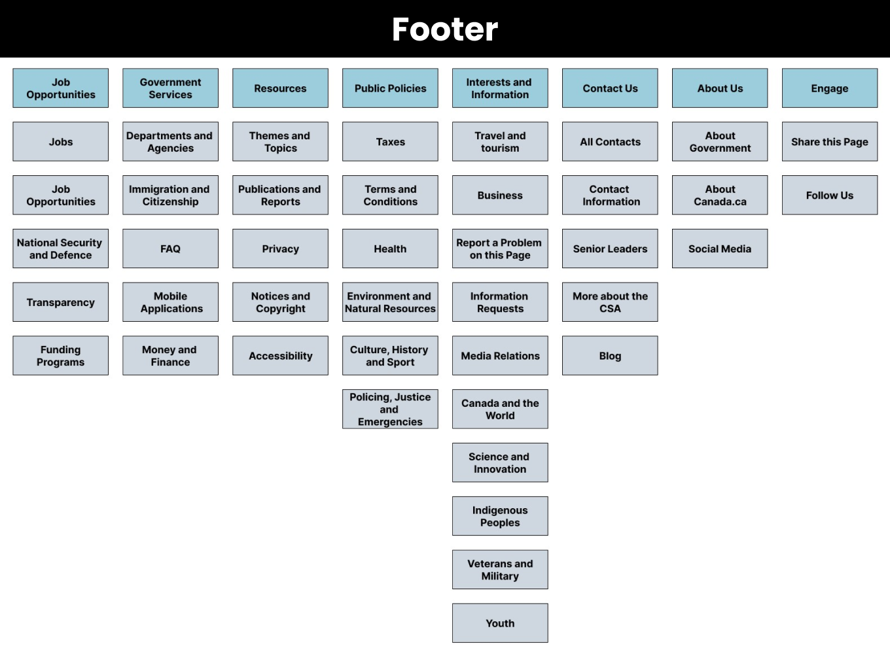
02. Site Map
After card sorting, we created a site map to logically structure the CSA website based on users' categorization of information. This step was crucial in ensuring the new website's layout was intuitive and aligned with users' expectations.
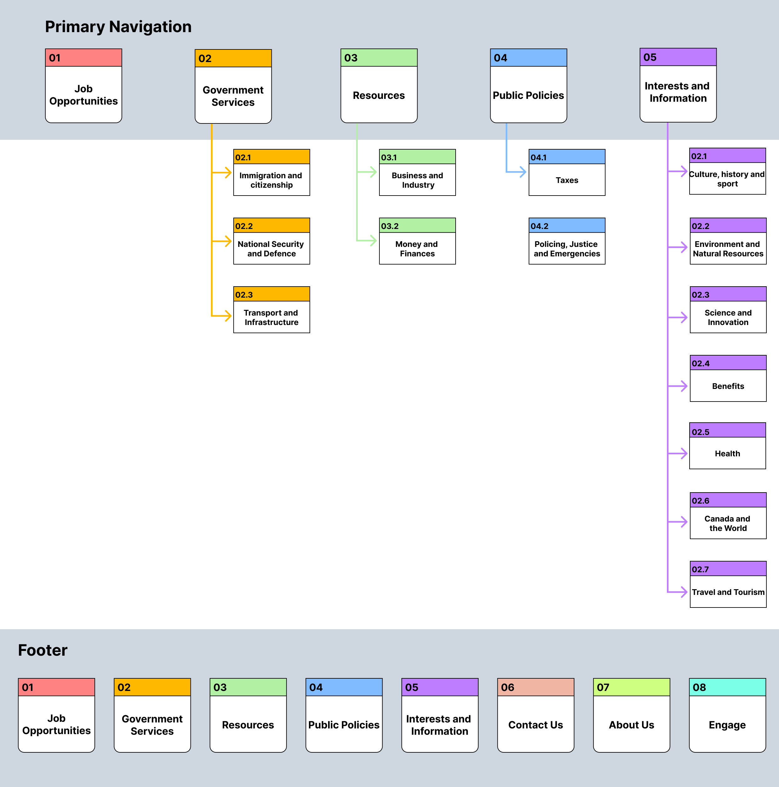
03. Style Tile Guide
With all the information we have, it is time to move on to the redesigning phase, so we developed a UI Style Guide to provide a visual framework for the CSA website. Style tile gives us an idea of what the finished product might look like, and avoid any misinterpretations ensuring design consistency.
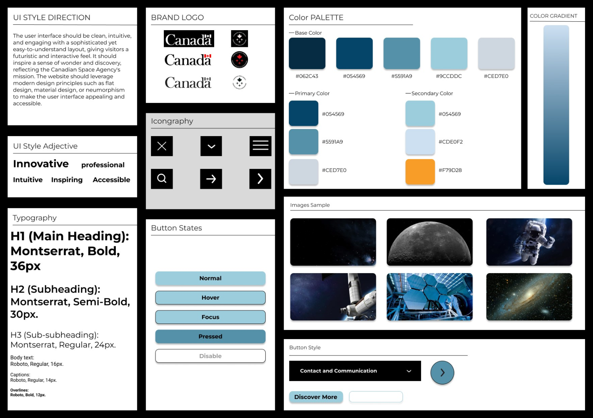
REDESIGN
PROCESS
After structuring and defining the website elements, the next step was the actual redesign process. This phase took the visual and structural guidelines from the UI Style Tile and began creating the website's look and feel with Low and Mid-Fidelity Wireframes, providing an initial visualization of the user interface.
Then we created a Mid-Fidelity Clickable Wireframes for practical check of the site navigation. Next, we conducting 5-Second Usability Tests and based on the testing feedback we modified our prototype. This process was essential for refining the website before moving to the final design, ensuring a smooth, intuitive user experience.
01. Wireframes
We created the low-fidelity wireframes to visualize the site's new layout, and based on the low-fidelity wireframes we created our mid-fidelity wireframes. These helped identify any design or usability issues early, making it easier to adjust for the best user experience.
"Please use the scroll on the side to see the full wireframes"

02. Mid - Fidelity Clickable Prototype
Once we establish how the redesign will look like, we created a clickable prototype to help us with conducting 2 user testings.
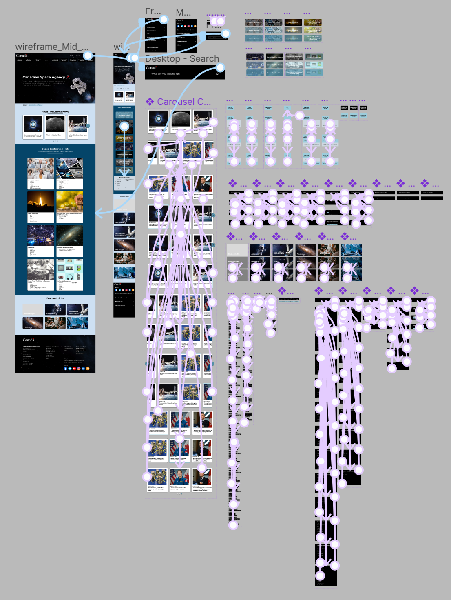
03. Five Seconds Usability Testing Feedback
Upon creating the Mid-Fidelity Clickable Prototype, we conducted 5-Second Usability Testing to evaluate initial user reactions. This quick evaluation helped identify immediate layout or navigation issues, enabling timely refinements to enhance user comprehension and experience. Then we gathered the results, and summarize them into these main points that participants mentioned.
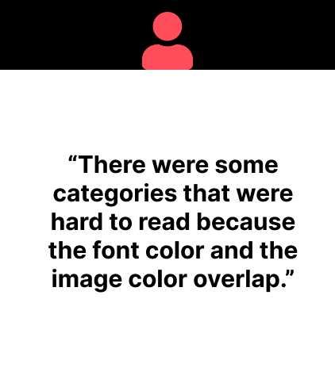
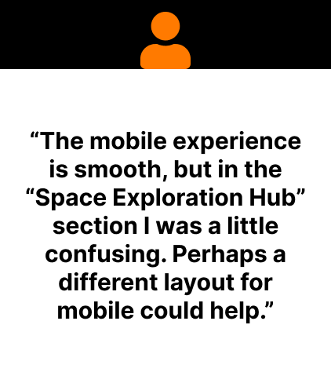
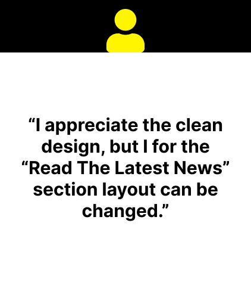
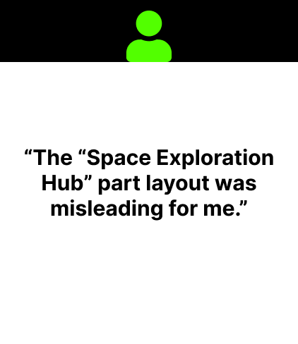
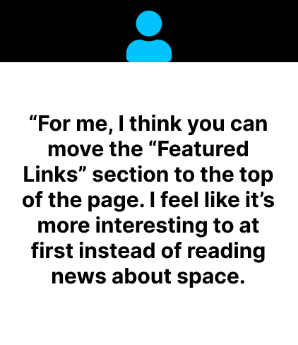
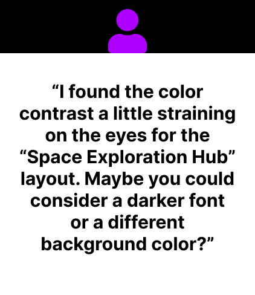
04. Refined Wireframe and Prototype
We created the low-fidelity wireframes to visualize the site's new layout, and based on the low-fidelity wireframes we created our mid-fidelity wireframes. These helped identify any design or usability issues early, making it easier to adjust for the best user experience.
"Please use the scroll on the side to see the full wireframes"
HOMECHEF
MOCKUP
FINAL
THOUGHT
From this project, these are what I discovered and learned User-centric design and deep analysis are key to transforming complex websites into accessible platforms. User testing and heuristic evaluations intensify my grasp of user needs.
Short - Term Improvement:
1. Provide seamless experience across devices and screens,
2. Enhance app's responsiveness on various devices, and
3. Continually redesign and test the website
Long - Term Improvement:
1. Regularly update news, missions, resources, and job opportunities.
2. Regularly test and gather feedback for constant website improvement.
3. Regularly update the design to align with UX/UI trends, CSA brand, and goals.
More Works